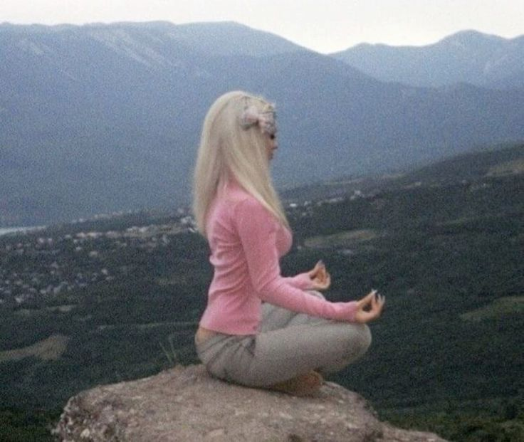

Design your day. Bloom your life.
Сайт, который помогает следить за привычками, не забывать про отдых и держать фокус на важных задачах. Всё в одном месте.

Get started
-Photoroom.png)
Habits
Каждое наше действие сегодня определяет то, кем мы станем завтра. Маленькие регулярные повторения обладают огромной силой, способной перевернуть привычный образ жизни.На этом сайте вы можете заложить прочный фундамент: узнать, как правильно привязывать новые привычки к старым триггерам и как не бросить начатое на полпути. Это ваша базовая площадка. Когда вы будете готовы перейти от теории к реальным действиям — запустите подробный интерактивный трекер и начните строить лучшую версию себя прямо на своем компьютере
Ваша привычка. Нажмите, чтоб отметить день
Реальный прогресс — это не идеальный лайфстайл из соцсетей, а умение продолжать, когда лень. Эмоции и запал быстро проходят, остаются только твои системные действия. Если забил вчера — просто вернись в строй сегодня. Пропустить один день — это ошибка, пропустить два — уже выбор. Твоё будущее складывается из того, что ты делаешь прямо сейчас, а не из того, что планируешь начать с понедельника. Жми на день и двигайся дальше.
«Привычки — это проценты по вкладу твоего саморазвития.»
Каждый день они кажутся незначительными. Обычный стакан воды, лишние 10 минут чтения или одна вовремя закрытая задача не меняют твою жизнь мгновенно. Но через полгода эти мелкие действия наслаиваются друг на друга и превращаются в лавину, которая полностью меняет твою реальность. Ты — это то, что ты делаешь изо дня в день.
«Лучше сделать плохо, чем не сделать вообще.»
Главная ошибка — пытаться быть идеальным. Если у тебя нет сил на полноценную часовую тренировку, сделай зарядку на две минуты. Если нет времени читать главу книги, прочитай одну страницу. Смысл трекера не в том, чтобы собирать идеальные зеленые галочки, а в том, чтобы не терять идентичность человека, который движется вперед. Устал? Сделай минимум, но не пропускай день.
Mental Health
«Твоя продуктивность не определяет твою человеческую ценность.»
Мы привыкли измерять успешность дня количеством вычеркнутых задач и закрытых дедлайнов. Но мозг — это не процессор, который может работать на максимальной мощности без остановки. Игнорирование усталости не делает тебя сильнее, оно просто крадет твои ресурсы у завтрашнего дня. Настоящая сила заключается в умении вовремя нажать на паузу, закрыть ноутбук и разрешить себе абсолютно ничего не делать. Отдых — это не награда, которую нужно заслужить. Это базовая необходимость для выживания твоей психики.
Чувствуешь фоновую тревогу или усталость?
Сделай глубокий выдох, прикрой глаза на 10 секунд и посиди в тишине.
«Твой телефон заслуживает перезагрузки, и твой мозг тоже.»
Мы не замечаем, как открываем по двадцать вкладок в браузере, одновременно отвечая на сообщения и пытаясь учиться. Мозг физически не умеет работать в таком режиме — он просто быстро перегорает от перегрузки. Защити свое внимание. Убери телефон экраном вниз, закрой лишний шум и побудь наедине со своей задачей хотя бы двадцать минут. Фокус вернется, как только ты уберешь лишнее.
«Шаг назад не отменяет весь твой пройденный путь.»
Бывают дни, когда не хочется делать абсолютно ничего. Нет сил заполнять трекеры, читать полезные книги или держать фокус. И это нормально. Ошибка или срыв — это не повод бросать всё и называть себя неудачником. Забота о себе — это умение быть гибким. Если сегодня плохой день, просто прими это, отдохни и начни заново завтра. Один шаг назад — это часть пути, а не его конец.